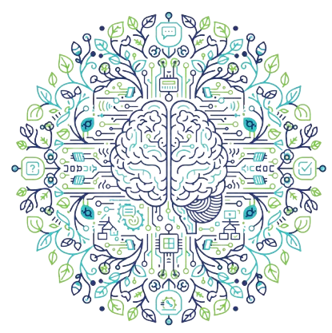

Sobre Mim
Sou um Desenvolvedor Full Stack com formação em Análise e Desenvolvimento de Sistemas, apaixonado por construir soluções digitais completas. Minha atuação foca na comunicação clara e eficaz, buscando sempre a melhor solução para o cliente, do conceito à implementação.
